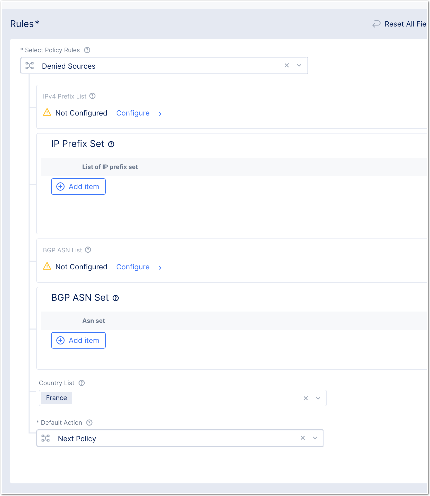
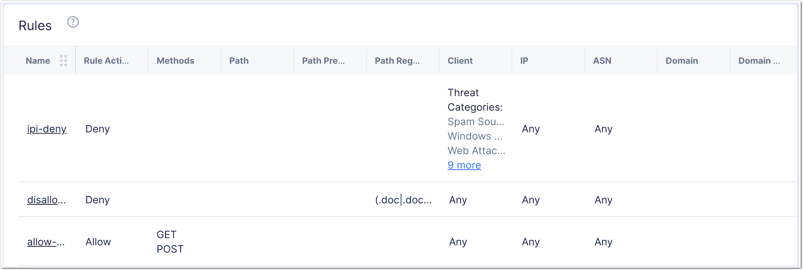

Workshop Volterra 10x > Class2 - F5XC WAAP Advanced Features > Module 1 - Deployed a Positive Security Policy Source |
Lab 2 - Allow HTTP Methods, File Types and Geolocalisation¶
In this lab, we will create 3 more rules:
- Allow only GET and POST HTTP Methods
- Disallow some file types (exe, bat …)
- Geoloc - disallow some countries
Disallow file types¶
In the same Service Policy, create a new rule
Name it as you want
file-type-denyIn action, set
DenyIn Request Match, and HTTP Path, click
configureAdd this value in the
Regex Values(.doc|.docx|.pdf|.exe|.bat)$
Note
This will disallow doc, docx, pdf, exe and bat file types.
Geoloc - disallow countries¶
For Geolocalization or any Source IP rules, a
new Service Policyis required. This can’t be added to the L7 Custom PolicyCreate a new Service Policy named
sp-geoIn the rules, instead of creating a custom rule, we wil create a
Denied SourcesruleIn
Country List, select the countries you want to denyCheck default action is set to
Next Policy
{kind=link}
Allow HTTP Methods¶
- In the same Service Policy created in previous lab, create a new rule
- Name it as you want
method-allow - In action, set
Allow - In Request Match, Configure
HTTP Method - Add
GETandPOST - Save your rule.
- You should see now 2 rules
- IP-Reputation rule
- Methods allowed rule
Note
You should have 3 rules in your Service Policy. Check the order.
{kind=link}